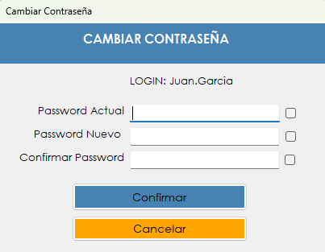

Permite que cada usuario reemplace su clave personal de acceso. Al terminar, el sistema cierra la sesión y pide ingresar de nuevo con la clave nueva.
La contraseña es lo que identifica a cada persona dentro del sistema, y todas las operaciones quedan registradas a nombre de quien inició la sesión. Por eso cada usuario puede cambiar su clave sin depender del administrador, por ejemplo en el primer ingreso, cuando todavía tiene la clave inicial, o cuando sospecha que otra persona pudo conocerla.
El cambio alcanza solamente a la cuenta que tiene la sesión iniciada. Para pedirlo, el sistema exige la contraseña actual: de esa forma, nadie puede modificarla aprovechando una sesión que quedó abierta.
Desde el menú principal, en Usuario › Cambiar Contraseña. La opción aparece solamente si el rol del usuario incluye la patente correspondiente.

| Control | Para qué se usa |
|---|---|
| LOGIN | Muestra el nombre del usuario que tiene la sesión iniciada. Es informativo: permite verificar a qué cuenta se le va a cambiar la clave. |
| Password Actual | La contraseña que se está usando hoy. |
| Password Nuevo | La contraseña que va a reemplazar a la actual. |
| Confirmar Password | La contraseña nueva escrita por segunda vez, para evitar errores de tipeo. |
| Casillas de la derecha | Hay una por cada campo. Mientras está tildada, muestra en texto legible lo escrito en ese campo. |
| Confirmar | Valida los datos y guarda la contraseña nueva. |
| Cancelar | Cierra la pantalla sin cambiar nada. |
| Situación | Qué significa y qué hacer |
|---|---|
| "Debe completar todos los campos." | Quedó vacío alguno de los tres campos de contraseña. Hay que completarlos y presionar Confirmar otra vez. |
| "Las contraseñas nuevas no coinciden." | Lo escrito en Password Nuevo y en Confirmar Password es distinto. Conviene tildar las casillas de la derecha para comparar ambos textos. |
| "La nueva contraseña debe ser distinta a la actual." | La clave nueva es igual a la que está en uso. Hay que elegir una diferente. |
| "La contraseña actual es incorrecta." | Lo escrito en Password Actual no coincide con la clave vigente. La contraseña no cambia y se puede volver a intentar. Si no se la recuerda, hay que pedir ayuda a un administrador. |
| "La operación se registró correctamente, pero no pudo asentarse en la Bitácora:" seguido del motivo | La contraseña se cambió, pero el evento no quedó registrado en la bitácora. Después de los dos puntos se muestra el motivo técnico del fallo. Conviene avisarle al administrador. |
| "Contraseña actualizada correctamente. Debe iniciar sesión nuevamente." | El cambio se realizó. Al aceptar, la sesión se cierra y hay que volver a ingresar con la clave nueva. |
Atención. Al confirmar el cambio se cierra la sesión. Conviene terminar y guardar cualquier otra tarea antes de abrir esta pantalla.